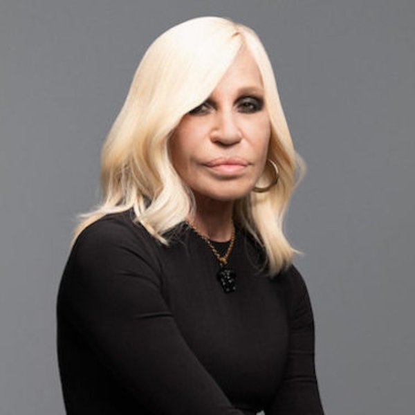
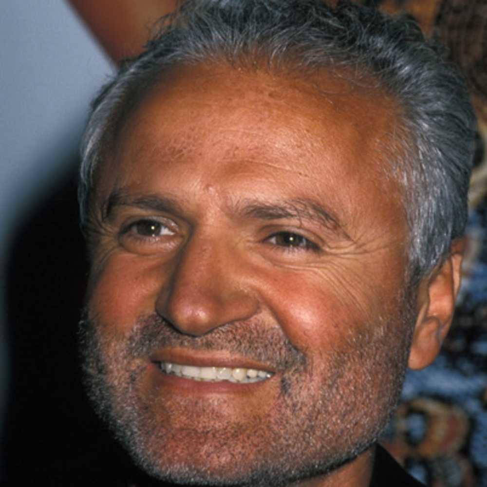
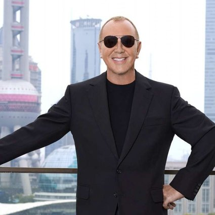

Despre
Gianni Versace S.p.A. cunoscută sub numele scurt de Versace, este o marcă de vestimentație haute couture și prêt-à-porter de calitate superioară înființată de către Gianni Versace în 1978. Primul magazin Versace a fost deschis în Milano și a devenit imediat foarte popular și recunoscut. Astăzi, este una dintre cele mai remarcabile case de modă din lume. Proiectează, produce și vinde veșminte, accesorii, parfumuri, produse de machiaj și mobilier sub marca sa. Gianni Versace a fost asasinat de către Andrew Cunanan pe 15 iulie 1997. Sora lui, Donatella, împreună cu fratele lor mai mare, Santo, au preluat compania.
-

1978 - acum 44 ani
as Gianni Versace Donna
Fondată în 1978 la Milano, Gianni Versace S.r.l. este una dintre cele mai importante case internaționale de design de modă și un simbol al luxului italian la nivel mondial. Proiectează, produce, distribuie și comercializează cu amănuntul produse de modă și stil de viață, inclusiv haute couture, prèt-à-porter, accesorii, bijuterii, ceasuri, ochelari, parfumuri și mobilier de casă, toate purtând sigla distinctivă Medusa. Grupul Versace își distribuie produsele printr-o rețea D.O.S la nivel mondial, care include peste 200 de buticuri în principalele orașe și peste 1500 de angrosisti din întreaga lume.
-

1997 - acum 25 de ani
Conducere Brand
Donatella Versace este director artistic al Versace din 1997 și a condus brandul în secolul XXI. Astăzi, Versace își reprezintă moștenirea prin designurile sale puternice și neînfricate, în timp ce se adresează unui nou public global care continuă să consolideze poziția Versace în cultura contemporană.
-

2000 - acum 22 de ani
Proiect hotelier
În anul 2000 Gianni Versace S.r.l. a deschis Palazzo Versace, primul proiect hotelier care a fost marcat de o companie de produse de lux, care oferă turiștilor și călătorilor oportunitatea de a experimenta și de a se bucura de stilul de viață complet Versace. Al doilea Palazzo Versace construit în Dubai a fost deschis în 2015. Al treilea Palazzo Versace va fi construit în Macao, China.
-

Februarie 2014
Rolurile principale
În februarie 2014, Gianni Versace S.r.l. și-a anunțat acordul cu Blackstone pentru a participa la următoarea fază a dezvoltării companiei. Blackstone deține 20% din companie; în timp ce familia Versace rămâne în centrul ei, doamna Allegra Versace Beck, doamna Donatella Versace și domnul Santo Versace jucând toți roluri importante în companie. Donatella Versace deține dublul rol de vicepreședinte al consiliului de administrație și director artistic.
-

Septembrie 2018
Afacere vanduta !
În septembrie 2018, Versace a anunțat că sută la sută din toate acțiunile familiei Blackstone și Versace au fost vândute grupului Michael Kors Limited. În ianuarie 2019, Gianni Versace S.r.l. s-a alăturat Capri Holdings Limited, formând un nou grup global de lux de modă împreună cu Michael Kors și Jimmy Choo.
-
Istoria Versace